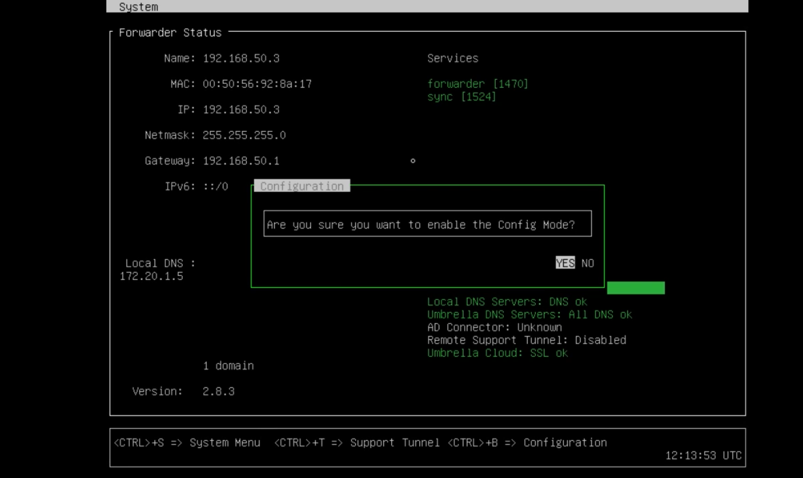
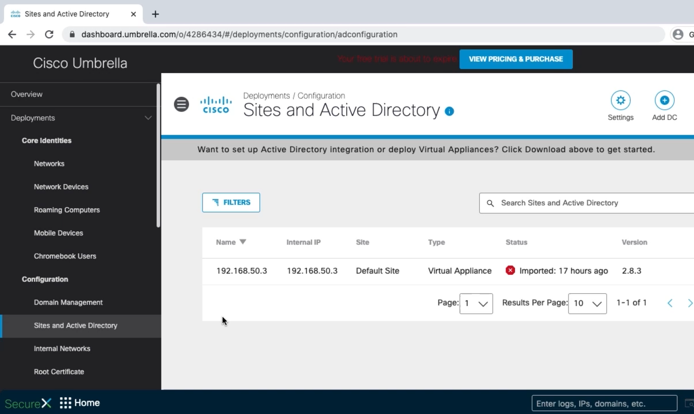
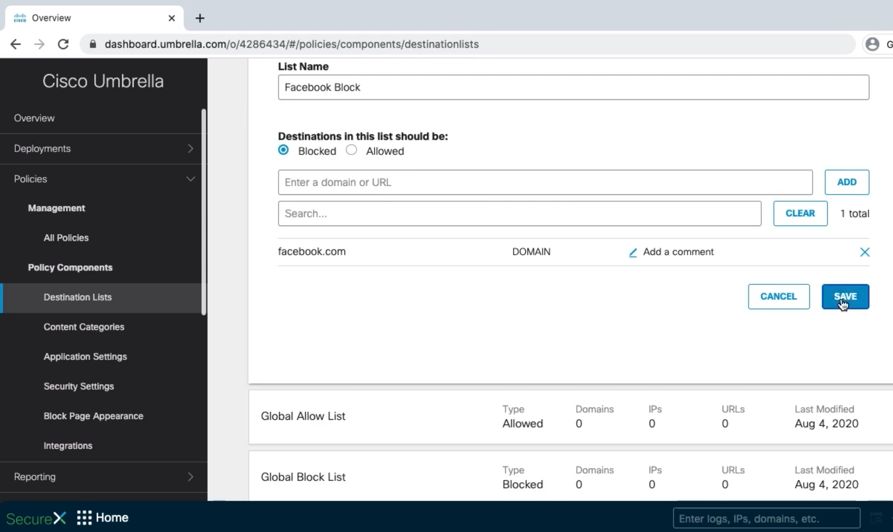
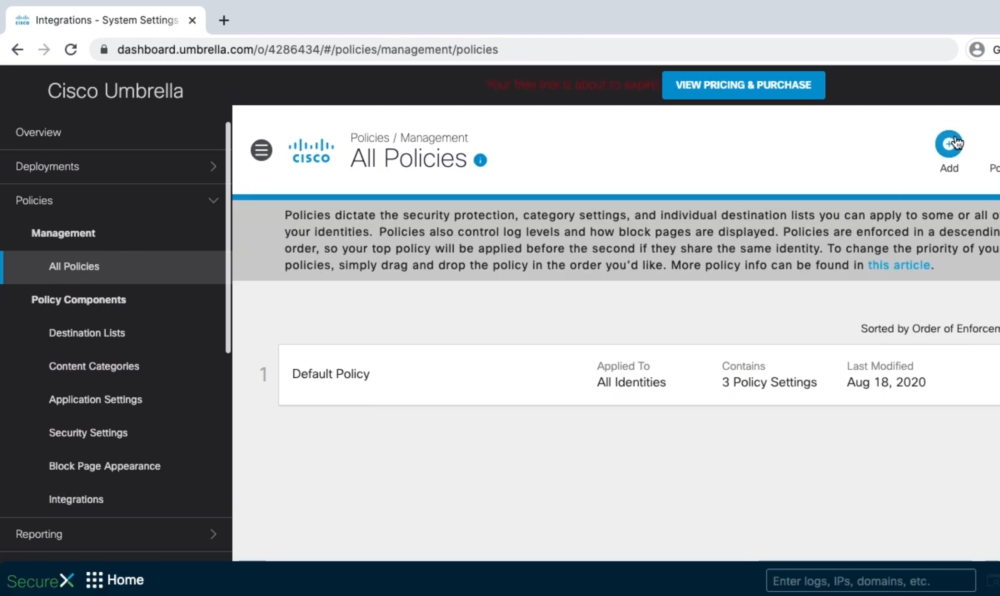
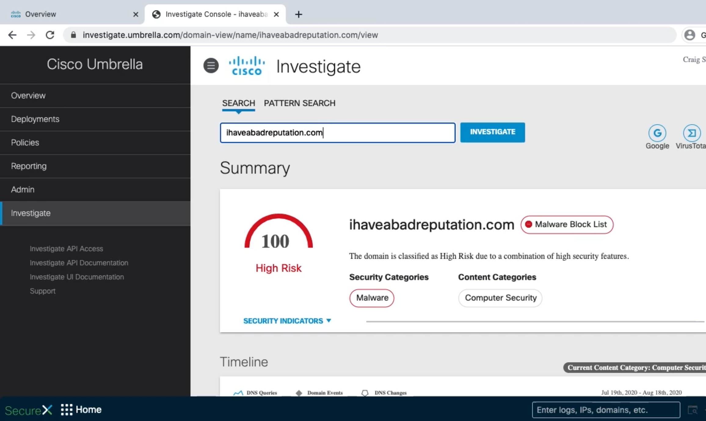

Deploying Cisco Umbrella
Configuring Networks to Use Cisco Umbrella
Umbrella virtual machine forwarder
DHCP
Add public IPs to Umbrella
Add internal networks to Umbrella

config va localdns 172.20.1.5
exit

Creating Policies in Cisco Umbrella
Create policy components
Create a policy



Cisco Umbrella Roaming Computer Profiles
Configure DNS and verify IP address
Download and install roaming client
Update proxy
Verify

Cisco Umbrella Investigate
